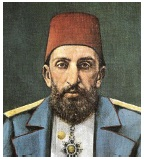

İmparatorluğun son devirlerinde, bilhassa İkinci Abdülhamit zamanında ve Meşrutiyet’te memur maaşları her ay düzenli olarak verilemiyordu. Maaşların ödenmesi bir mesele, memurlar içinse âdeta bir bayramdı. Memurların çoğu maaşlarını sarraflara faizle kırdırır, sıkıntı içinde yaşarlardı. En küçük bir kâtipten, vezirine kadar sarrafa borcu olmayan memur yok gibiydi; devlet büyüklerinin kendi özel sarrafları vardı ki tamamı gayrimüslimdi. Rum, Ermeni ve Yahudi olan bu sarraflar o dönemlerde muazzam servetler edinmişlerdir.

II. Abdülhamit zamanında, iki büyük ve eski savaş gemisi, üç ambarlı Mahmudiye gemisi ile bir askerî nakliye gemisi olan Taif vapuru kadro dışı bırakılmış ve tersanede bozularak ahşap ve demir enkazı ayrılmıştı. Bahriye Nazırı (Denizcilik Bakanı) Hasan Paşa da o devrin nüfuzlu kişilerindendi. Maliye hazinesinde para olmadığı için bu iki geminin enkazını, bir müddet bahriye subaylarının ve askerlerinin çıkmayan maaşlarına karşılık olarak kullanmıştı. O günlerde zamanımızın maaş bordroları yerine maaş kağıtları kesilir, Nazır Hasan Paşa da bu kağıtların altına örneğin: “Maaşına karşılık Taif vapurundan 500 okka enkaz verile” diye yazardı. Nazırdan bu emri koparanlar sevinçten âdeta uçardı. Hemen enkazcılara koşarlar, maaş kağıdını derhal paraya çevirtirlerdi. Sonra, o adamlar da tersaneye gelerek topladıkları maaş kâğıtlarının tutarında Taif ve Mahmudiye gemilerinin enkazını kaldırırlardı.